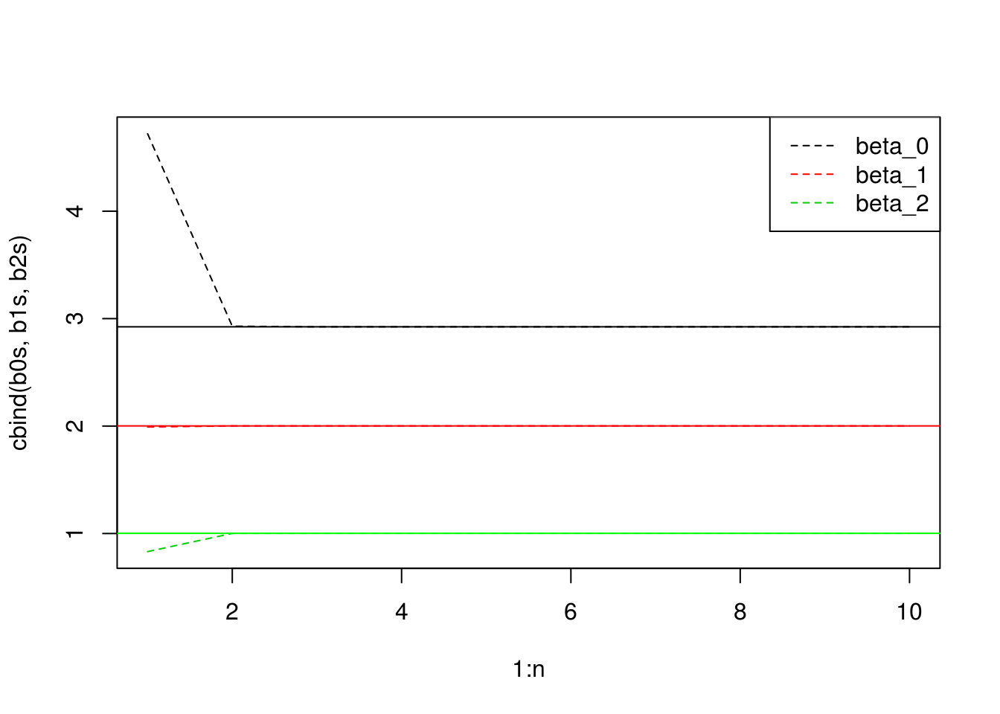

Chapter 7 Moving Beyond Linearity
- Note that if we have \(x \leq \xi\), then \((x- \xi)^3_+= 0\), so \(f(x)\) reduces to \[\begin{align} f(x) &= \beta_0 + \beta_1 x + \beta_2 x^2 + \beta_3 x^3 + \beta_4(x-\xi)^3_+ \\ &= \beta_0 + \beta_1 x + \beta_2 x^2 + \beta_3 x^3\, . \end{align}\] This gives coefficients \(a_1 = \beta_0\), \(b_1 = \beta_1\), \(c_1 = \beta_2\), \(d_1 = \beta_3\).
- Remember that \((x-\xi)^3 = x^3 - 3x^2 \xi + 3x \xi^2 - \xi^3\). Then expanding \((x-\xi)^3_+\) within \(f(x)\) gives \[\begin{align} f(x) &= \beta_0 + \beta_1 x + \beta_2 x^2 + \beta_3 x^3 + \beta_4(x-\xi)^3_+ \nonumber \\ &= \beta_0 + \beta_1 x + \beta_2 x^2 + \beta_3 x^3 + \beta_4(x^3 - 3x^2 \xi + 3x \xi^2 - \xi^3) \nonumber \\ &= \beta_0 - \beta_4\xi^3 + (\beta_1+ 3 \beta_4 \xi^2)x + (\beta_2 - 3 \beta_4 \xi)x^2 + (\beta_3 + \beta_4) x^3 \, . \tag{7.1} \end{align}\] Equating \(f_2(x)\) with (7.1), we get that \(a_2 = \beta_0 - \beta_4 \xi^3\), \(b_2 = \beta_1 + 3 \beta_4 \xi^3\), \(c_2 = \beta_2 - 3 \beta_4 \xi\), and \(d_4 = \beta_3 + \beta_4\).
- Directly plugging into \(f_1(x)\), \[\begin{equation} f_1(\xi) = \beta_0 + \beta_1 \xi + \beta_2 \xi^2 + \beta_3 \xi^3\, . \end{equation}\] Plugging into \(f_2(x)\), \[\begin{align} f_2(\xi) &= \beta_0 - \beta_4 \xi^3 + (\beta_1 + 3\beta_4 \xi^2)\xi +(\beta_2 - 3 \beta_4 \xi)\xi^2 + (\beta_3 + \beta_4) \xi^3 \\ &= \beta_0 - \beta_4 \xi^3 + \beta_1\xi + 3\beta_4\xi^3 + \beta_2\xi^2 - 3\beta_4\xi^3 + \beta_3 + \beta_4 \xi^3 \\ &= \beta_0 - \beta_1 \xi + \beta_2 \xi^2 + \beta_3\xi^3\, . \end{align}\] This gives us that \(f_1(\xi) = f_2(\xi)\).
- First note that \[\begin{align} f_1'(x) &= \beta_1+2\beta_2x + 3\beta_3x^2 \, ,\\ f_2'(x) &= \beta_1 + 3\beta_4\xi^2 + 2(\beta_2- 3\beta_4\xi)x + 3(\beta_3+\beta_4)x^2 \, . \end{align}\] Plugging in \(\xi\) into \(f_1'(x)\), \[\begin{equation} f_1'(\xi) = \beta_1+2\beta_2 \xi + 3\beta_3 \xi^2 \end{equation}\] Plugging \(\xi\) into \(f_2'(x)\), \[\begin{align} f_2'(\xi) &= \beta_1 + 3\beta_4\xi^2 + 2(\beta_2- 3\beta_4\xi)\xi + 3(\beta_3+\beta_4)\xi^2\\ &= \beta_1 + 3 \beta_4 \xi^2 + 2\beta_2 \xi - 6\beta_4 \xi^2 + 3\beta_3\xi^2 + 3\beta_4\xi^2\\ &= \beta_1 + 2\beta_2 \xi + 3\beta_3 \xi^2 \end{align}\] which is \(f_1'(\xi)\).
- We have \[\begin{align} f_1''(x) &= 2\beta_2 + 6\beta_3 x \, , \\ f_2''(x) &= 2\beta_2 - 6\beta_4 \xi + (6\beta_3 + 6\beta_4) x \, . \end{align}\] So, \[\begin{equation} f_1''(\xi) = 2\beta_2 + 6\beta_3 \xi \, . \end{equation}\] And plugging \(\xi\) into \(f_2''(x)\), we have \[\begin{align} f_2''(\xi) &= 2\beta_2 - 6\beta_4 \xi + (6\beta_3 + 6\beta_4) \xi \\ &= 2 \beta_2 - 6\beta_4 \xi + 6 \beta_3 \xi + 6 \beta_4 \xi \\ &= 2\beta_2 + 6\beta_3 \xi \, . \end{align}\] This shows that \(f_1''(\xi) = f_2''(\xi)\).
- I’m not interested in sketching as much as describing the class of solutions and which solution is best within each one.
- If \(m=0\), then we are saying then if \(g(x)>0\) at any point (ignoring issues of measure), then \(\lambda \int g(x)^2 dx \rightarrow \infty\) as \(\lambda \rightarrow \infty\), so the only solution of \(\hat{g}\) is \(\hat{g}(x) = 0\).
- This must be a constant function since \(f'(x) = 0\) for any constant function \(f\). In this case, the solution that minimizes the error would be \(\hat{g}(x) = \bar{y}\).
- In this case, it is a linear function since \(f''(x) = 0\) for any linear function. This reduces to the linear least squares solution.
- This would be a quadratic solution linear least squares fit.
- Since \(\lambda=0\), we would probably be the same in the case of \(\lambda=0\) and \(m=2\), so we would get an interpolating spline.
x <- seq(-2,2,.01)
y <- 1 + 1*x + (x-1)^2*(x>=1)
plot(x,y,type="l")- Before we even plot, we can note that \(b_2\) actually has no effect for \(x \in [-2,2]\).
x <- seq(-2, 2, .01)
b1 <- function(x) (x >= 0 & x<=2)-(x-1)*(x>=1 & x<=2)
b2 <- function(x) (x-3)*(x>=3 & x<=4)+(x>4 & x<=5)
y <- 1 + b1(x) + 3*b2(x)
plot(x,y,type="l")- As \(\lambda \rightarrow \infty\), \(\hat{g}_4\) will have the smaller training RSS. That is because it is allowed to have more variability.
- As \(\lambda \rightarrow \infty\), we cannot know if \(\hat{g}_1\) or \(\hat{g}_2\) will have lower test RSS. We do not know what the true response is, so it is possible it is a very high degree polynomial, in which case \(\hat{g}_2\) will fit it better. However, if the true response is a line, then \(\hat{g}_1\) will have a better test RSS.
- For \(\lambda=0\), the two models degenerate into the same model, so they will have the same training and test RSS.
data(Wage,package="ISLR")
head(Wage)## year age maritl race education
## 231655 2006 18 1. Never Married 1. White 1. < HS Grad
## 86582 2004 24 1. Never Married 1. White 4. College Grad
## 161300 2003 45 2. Married 1. White 3. Some College
## 155159 2003 43 2. Married 3. Asian 4. College Grad
## 11443 2005 50 4. Divorced 1. White 2. HS Grad
## 376662 2008 54 2. Married 1. White 4. College Grad
## region jobclass health health_ins
## 231655 2. Middle Atlantic 1. Industrial 1. <=Good 2. No
## 86582 2. Middle Atlantic 2. Information 2. >=Very Good 2. No
## 161300 2. Middle Atlantic 1. Industrial 1. <=Good 1. Yes
## 155159 2. Middle Atlantic 2. Information 2. >=Very Good 1. Yes
## 11443 2. Middle Atlantic 2. Information 1. <=Good 1. Yes
## 376662 2. Middle Atlantic 2. Information 2. >=Very Good 1. Yes
## logwage wage
## 231655 4.318063 75.04315
## 86582 4.255273 70.47602
## 161300 4.875061 130.98218
## 155159 5.041393 154.68529
## 11443 4.318063 75.04315
## 376662 4.845098 127.11574a.
```r
library(boot)
set.seed(1)
cv.errors <- double(10)
for(i in 1:10) {
glm.fit <- glm(wage ~ poly(age,i), data=Wage)
cv.errors[i] <- cv.glm(Wage, glm.fit, K=10)$delta[1]
}
plot(cv.errors,type="l",xlab="degree",ylab="error")
abline(v=which.min(cv.errors),col="red",lty=2)
```
<img src="ISLR-exercises_files/figure-html/unnamed-chunk-175-1.png" width="672" />
A polynomial of degree 4 is the best fit to the data.
```r
lm.mods<-list()
for(i in 1:10) {
lm.fit <- lm(wage ~ poly(age,i),data=Wage)
lm.mods[[i]] <- lm.fit
}
do.call("anova",lm.mods)
```
```
## Analysis of Variance Table
##
## Model 1: wage ~ poly(age, i)
## Model 2: wage ~ poly(age, i)
## Model 3: wage ~ poly(age, i)
## Model 4: wage ~ poly(age, i)
## Model 5: wage ~ poly(age, i)
## Model 6: wage ~ poly(age, i)
## Model 7: wage ~ poly(age, i)
## Model 8: wage ~ poly(age, i)
## Model 9: wage ~ poly(age, i)
## Model 10: wage ~ poly(age, i)
## Res.Df RSS Df Sum of Sq F Pr(>F)
## 1 2998 5022216
## 2 2997 4793430 1 228786 143.7638 < 2.2e-16 ***
## 3 2996 4777674 1 15756 9.9005 0.001669 **
## 4 2995 4771604 1 6070 3.8143 0.050909 .
## 5 2994 4770322 1 1283 0.8059 0.369398
## 6 2993 4766389 1 3932 2.4709 0.116074
## 7 2992 4763834 1 2555 1.6057 0.205199
## 8 2991 4763707 1 127 0.0796 0.777865
## 9 2990 4756703 1 7004 4.4014 0.035994 *
## 10 2989 4756701 1 3 0.0017 0.967529
## ---
## Signif. codes: 0 '***' 0.001 '**' 0.01 '*' 0.05 '.' 0.1 ' ' 1
```
From the analysis of variance, we can see that the stops being significant at the 4th degree polynomial. This agrees with the cross-validaiton results.
A plot of the polynomial fit is below.
```r
plot(Wage$age,Wage$wage,xlab="age",ylab="wage")
lines(predict(lm.mods[[i]],list(age=seq(from=min(Wage$age),to=max(Wage$age),length.out=100))),col="red")
legend("topright",c("data","fit"),pch=c(1,NA),lty=c(NA,1),col=c("black","red"))
```
<img src="ISLR-exercises_files/figure-html/unnamed-chunk-177-1.png" width="672" />
b.
```r
set.seed(1)
cv.errors <- double(10)
for(i in 1:10) {
n_ints <- i+2
k_folds <- 10
folds <- cut(seq(1,nrow(Wage)),breaks=k_folds,labels=FALSE)
errors <- double(k_folds)
breaks <- quantile(Wage$age,p=seq(0,1,by=1/n_ints))
Wage$age.cut <- cut(Wage$age,breaks=n_ints)
for(k in 1:k_folds){
train <- folds != k
glm.fit <- lm(wage ~ age.cut, data=Wage, subset=train)
y.pred <- predict(glm.fit,Wage[!train,])
errors[k] <- mean((y.pred-Wage$wage[!train])^2)
}
cv.errors[i] <-mean(errors)
}
plot(3:12,cv.errors,type="l",xlab="number of intervals")
abline(v=which.min(cv.errors)+2,col="red",lty=2)
```
<img src="ISLR-exercises_files/figure-html/unnamed-chunk-178-1.png" width="672" />
A plot of the model is below.
```r
plot(Wage$age,Wage$wage,xlab="age",ylab="wage")
lm.fit <- lm(wage ~ cut(age,breaks=8), data=Wage)
age.grid <- seq(min(Wage$age),max(Wage$age))
y.pred<-predict(lm.fit,list(age=age.grid))
lines(age.grid,y.pred,col="red")
legend("topright",c("data","fit"),pch=c(1,NA),lty=c(NA,1),col=c("black","red"))
```
<img src="ISLR-exercises_files/figure-html/unnamed-chunk-179-1.png" width="672" />data(Auto,package="ISLR")
head(Auto)## mpg cylinders displacement horsepower weight acceleration year origin
## 1 18 8 307 130 3504 12.0 70 1
## 2 15 8 350 165 3693 11.5 70 1
## 3 18 8 318 150 3436 11.0 70 1
## 4 16 8 304 150 3433 12.0 70 1
## 5 17 8 302 140 3449 10.5 70 1
## 6 15 8 429 198 4341 10.0 70 1
## name
## 1 chevrolet chevelle malibu
## 2 buick skylark 320
## 3 plymouth satellite
## 4 amc rebel sst
## 5 ford torino
## 6 ford galaxie 500We will find the relationship between horsepower, weight, and mpgs.
library(splines)
set.seed(1)
wgt.cv.errs <- double(20)
for(i in 1:20){
folds <- cut(seq(1,nrow(Auto)),breaks=k_folds,labels=FALSE)
errors <- double(10)
for(k in 1:10) {
train <- folds != k
mod<-lm(mpg ~ ns(weight,df=i),data=Auto,subset=train)
y.pred<-predict(mod,Auto[!train,])
errors[k]<-mean((y.pred-Auto$mpg[!train])^2)
}
wgt.cv.errs[i] <- mean(errors)
}
plot(1:length(wgt.cv.errs),wgt.cv.errs,xlab="DF",ylab="Cross validation error",type="l")
abline(v=which.min(wgt.cv.errs),lty=2,col="red")Although 8 is the minimum, 2 appears just as good in addition to being simpler.
mod <- lm(mpg ~ ns(weight,df=2),data=Auto)
wgt.grid = seq(min(Auto$weight),max(Auto$weight),by=1)
mpg.pred<-predict(mod,list(weight=wgt.grid))
plot(Auto$weight,Auto$mpg,xlab="weight",ylab="mpg")
lines(wgt.grid,mpg.pred,col="red")library(splines)
set.seed(1)
fit <- smooth.spline(Auto$horsepower,Auto$mpg,cv=TRUE)## Warning in smooth.spline(Auto$horsepower, Auto$mpg, cv = TRUE): cross-
## validation with non-unique 'x' values seems doubtfulplot(fit,type="l",col="red")
points(Auto$horsepower,Auto$mpg)Now try with a GAM, but use ANOVA to see if we are adding anything by using the smoothing spline with the natural spline.
library(gam)## Loaded gam 1.14-4gam.m1 <- gam(mpg ~ ns(weight,2),data=Auto)
gam.m2 <- gam(mpg ~ ns(weight,2) + s(horsepower,fit$lambda), data=Auto)
anova(gam.m1,gam.m2)## Analysis of Deviance Table
##
## Model 1: mpg ~ ns(weight, 2)
## Model 2: mpg ~ ns(weight, 2) + s(horsepower, fit$lambda)
## Resid. Df Resid. Dev Df Deviance Pr(>Chi)
## 1 389 6781.1
## 2 388 6244.6 1 536.52 7.754e-09 ***
## ---
## Signif. codes: 0 '***' 0.001 '**' 0.01 '*' 0.05 '.' 0.1 ' ' 1data(Boston,package="MASS")
head(Boston)## crim zn indus chas nox rm age dis rad tax ptratio black
## 1 0.00632 18 2.31 0 0.538 6.575 65.2 4.0900 1 296 15.3 396.90
## 2 0.02731 0 7.07 0 0.469 6.421 78.9 4.9671 2 242 17.8 396.90
## 3 0.02729 0 7.07 0 0.469 7.185 61.1 4.9671 2 242 17.8 392.83
## 4 0.03237 0 2.18 0 0.458 6.998 45.8 6.0622 3 222 18.7 394.63
## 5 0.06905 0 2.18 0 0.458 7.147 54.2 6.0622 3 222 18.7 396.90
## 6 0.02985 0 2.18 0 0.458 6.430 58.7 6.0622 3 222 18.7 394.12
## lstat medv
## 1 4.98 24.0
## 2 9.14 21.6
## 3 4.03 34.7
## 4 2.94 33.4
## 5 5.33 36.2
## 6 5.21 28.7a.
```r
poly.fit <- lm(nox ~ poly(dis,degree=3), data=Boston)
summary(poly.fit)
```
```
##
## Call:
## lm(formula = nox ~ poly(dis, degree = 3), data = Boston)
##
## Residuals:
## Min 1Q Median 3Q Max
## -0.121130 -0.040619 -0.009738 0.023385 0.194904
##
## Coefficients:
## Estimate Std. Error t value Pr(>|t|)
## (Intercept) 0.554695 0.002759 201.021 < 2e-16 ***
## poly(dis, degree = 3)1 -2.003096 0.062071 -32.271 < 2e-16 ***
## poly(dis, degree = 3)2 0.856330 0.062071 13.796 < 2e-16 ***
## poly(dis, degree = 3)3 -0.318049 0.062071 -5.124 4.27e-07 ***
## ---
## Signif. codes: 0 '***' 0.001 '**' 0.01 '*' 0.05 '.' 0.1 ' ' 1
##
## Residual standard error: 0.06207 on 502 degrees of freedom
## Multiple R-squared: 0.7148, Adjusted R-squared: 0.7131
## F-statistic: 419.3 on 3 and 502 DF, p-value: < 2.2e-16
```
Plotting the resulting regression:
```r
dis.grid <- with(Boston, seq(min(dis), max(dis), by=(max(dis)-min(dis))/1000))
y.pred <- predict(poly.fit,list(dis=dis.grid))
with(Boston, plot(dis,nox))
lines(dis.grid, y.pred, type="l", col="red")
```
<img src="ISLR-exercises_files/figure-html/unnamed-chunk-187-1.png" width="672" />
b. Note that we expect the RSS to drop for every higher degree of polynomial here because we will fit to the model better with least squares.
```r
rss <- double(10)
for(i in 1:10){
poly.fit <- lm(nox ~ poly(dis,degree=i), data=Boston)
poly.sum <- summary(poly.fit)
rss[i] <- sum(poly.sum$residuals^2)
}
data.frame(degree=1:10, rss)
```
```
## degree rss
## 1 1 2.768563
## 2 2 2.035262
## 3 3 1.934107
## 4 4 1.932981
## 5 5 1.915290
## 6 6 1.878257
## 7 7 1.849484
## 8 8 1.835630
## 9 9 1.833331
## 10 10 1.832171
```
c.
```r
set.seed(1)
cv.errs <- double(10)
for(i in 1:10){
k.folds <- 10
folds <- rep(1:k_folds,length.out = nrow(Boston))
errors <- double(10)
for(k in 1:10) {
train <- folds != k
mod<-lm(nox ~ poly(dis,degree=i),data=Boston,subset=train)
y.pred<-predict(mod,Boston[!train,])
errors[k]<-mean((y.pred-Boston$nox[!train])^2)
}
cv.errs[i] <- mean(errors)
}
plot(1:10,cv.errs,xlab="degree",ylab="CV error",type="l")
abline(v=which.min(cv.errs),col="red",lty=2)
```
<img src="ISLR-exercises_files/figure-html/unnamed-chunk-189-1.png" width="672" />
The cross-validation suggests that a 3rd degree polynomial gives the best results, but the 2nd degree could also be used for more simplicity.
d.
```r
library(splines)
bs.fit <- lm(nox ~ bs(dis,df=4), data=Boston)
y.pred <- predict(bs.fit, list(dis=dis.grid))
with(Boston,plot(dis,nox))
lines(dis.grid, y.pred, type="l", col="red")
```
<img src="ISLR-exercises_files/figure-html/unnamed-chunk-190-1.png" width="672" />
I let `bs` choose the knot for me. `bs` chooses the median in this case.
e. We expect it to be lower again since we are fitting a more flexible model to the data.
```r
dfs <- c(3, 4, 5, 7, 10, 15, 25, 50)
rss <- double(length(dfs))
for(i in seq_along(dfs)){
df <- dfs[i]
bs.fit <- lm(nox ~ bs(dis,df=df), data=Boston)
y.pred <- predict(bs.fit)
rss[i] <- sum((y.pred-Boston$nox)^2)
}
data.frame(df=dfs,rss)
```
```
## df rss
## 1 3 1.934107
## 2 4 1.922775
## 3 5 1.840173
## 4 7 1.829884
## 5 10 1.792535
## 6 15 1.782798
## 7 25 1.769957
## 8 50 1.679047
```
f.
```r
set.seed(927)
dfs <- 3:50
cv.errs <- double(length(dfs))
for(i in seq_along(dfs)) {
df <- dfs[i]
k.folds <- 10
folds <- rep(1:k_folds,length.out = nrow(Boston))
errors <- double(10)
for(k in 1:10) {
train <- folds != k
mod<-lm(nox ~ bs(dis,df=df),data=Boston,subset=train)
y.pred<-predict(mod,Boston[!train,])
errors[k]<-mean((y.pred-Boston$nox[!train])^2)
}
cv.errs[i] <- mean(errors)
}
plot(dfs,cv.errs,type="l")
abline(v=dfs[which.min(cv.errs)],lty=2,col="red")
```
<img src="ISLR-exercises_files/figure-html/unnamed-chunk-192-1.png" width="672" />
The minimum occurs at 12. A plot of it is below.
```r
best.bs.fit <- lm(nox ~ bs(dis,df=dfs[which.min(cv.errs)]), data=Boston)
y.pred <- predict(best.bs.fit, list(dis=dis.grid))
with(Boston,plot(dis,nox))
lines(dis.grid,y.pred,col="red")
```
<img src="ISLR-exercises_files/figure-html/unnamed-chunk-193-1.png" width="672" />
That kind of looks like overfitting. It appears that a df of 5 also gives comparable results while retaining much more accuracy.
```r
bs.5.fit <- lm(nox ~ bs(dis,df=5), data=Boston)
y.pred <- predict(bs.5.fit, list(dis=dis.grid))
with(Boston,plot(dis,nox))
lines(dis.grid,y.pred,col="red")
```
<img src="ISLR-exercises_files/figure-html/unnamed-chunk-194-1.png" width="672" />- Let’s visualize these relationships before choosing how we want to model these.
library(gam) sig.vars <- c("Private", "Accept", "Enroll", "Room.Board","Terminal", "perc.alumni", "Expend", "Grad.Rate") par(mfcol=c(3,3)) for( v in sig.vars){ plot(College[train,v],College[train,"Outstate"],xlab=v,ylab="Outstate") }Now build a gam. I really have no intuition for how to select which ones. I suppose there must be a lot of cross-validation, then comparing which cross-validation worked best for each technique.
gam.mod <- gam(Outstate ~ Private + s(Room.Board) + lo(Expend,span=.1) + lo(Accept,span=.1) + s(Terminal,df=10) + bs(Grad.Rate, df=4) + lo(Enroll,span=.1) + ns(perc.alumni,df=6), data=College, subset=train)## Warning in general.wam(x, z, wz, fit$smooth, which, fit$smooth.frame, ## bf.maxit, : general.wam convergence not obtained in 30 iterations ## Warning in general.wam(x, z, wz, fit$smooth, which, fit$smooth.frame, ## bf.maxit, : general.wam convergence not obtained in 30 iterations ## Warning in general.wam(x, z, wz, fit$smooth, which, fit$smooth.frame, ## bf.maxit, : general.wam convergence not obtained in 30 iterationspar(mfcol=c(3,3)) plot(gam.mod)gam.pred <- predict(gam.mod, College[-train,])## Warning in gam.lo(data[["lo(Expend, span = 0.1)"]], z, w, span = 0.1, ## degree = 1, : eval 56233## Warning in gam.lo(data[["lo(Expend, span = 0.1)"]], z, w, span = 0.1, ## degree = 1, : upperlimit 45915## Warning in gam.lo(data[["lo(Expend, span = 0.1)"]], z, w, span = 0.1, ## degree = 1, : extrapolation not allowed with blending## Warning in gam.lo(data[["lo(Accept, span = 0.1)"]], z, w, span = 0.1, ## degree = 1, : eval 26330## Warning in gam.lo(data[["lo(Accept, span = 0.1)"]], z, w, span = 0.1, ## degree = 1, : upperlimit 18837## Warning in gam.lo(data[["lo(Accept, span = 0.1)"]], z, w, span = 0.1, ## degree = 1, : extrapolation not allowed with blendinglm.mod <- lm(as.formula(paste(c("Outstate ~ ", sig.vars),"+",TRUE)),data=College, subset=train) lm.pred <- predict(lm.mod, College[-train,]) mean((gam.pred-College[-train,"Outstate"])^2)## [1] 3679466mean((lm.pred-College[-train,"Outstate"])^2)
In either case, our model performs better than the linear model.## [1] 15574088- Terminal, Grad.Rate, and Expend seem to be non-linear.
set.seed(927) x1 <- rnorm(100,20,5) x2 <- rnorm(100,10,5) y <- 3 + 2*x1 + x2 + rnorm(100)b1 <- -1a <- y-b1*x1 b2 <- lm(a~x2)$coef[2]a <- y-b2*x2 b1 <- lm(a~x1)$coef[2]- It converges very quickly, so I only plot the first 10 or so.
n<-10 b0s <- double(n) b1s <- double(n) b2s <- double(n) b0s[1] <- mean(y - b1*x1 - b2*x2) b1s[1] <- b1 b2s[1] <- b2 for(i in 2:n){ a <- y-b1*x1 b2 <- lm(a~x2)$coef[2] a <- y-b2*x2 b1 <- lm(a~x1)$coef[2] b0 <- mean(y - b1*x1 - b2*x2) b0s[i] <- b0 b1s[i] <- b1 b2s[i] <- b2 } matplot(x=1:n,y=cbind(b0s,b1s,b2s),type="l",lty=c(2,2,2)) legend(x="topright",c("beta_0","beta_1","beta_2"),lty=c(2,2,2),col=c(1,2,3))y.lm <- lm(y ~ x1 + x2) matplot(x=1:n,y=cbind(b0s,b1s,b2s),type="l",lty=c(2,2,2)) legend(x="topright",c("beta_0","beta_1","beta_2"),lty=c(2,2,2),col=c(1,2,3)) abline(h=y.lm$coef[1],lty=1,col="black") abline(h=y.lm$coef[2],lty=1,col="red") abline(h=y.lm$coef[3],lty=1,col="green")
p <- 100
n<- 1000
iters <- 25
B <- sample(-5:5,p,replace=TRUE) #true coefficients
Bs <- matrix(nrow=iters,ncol=p) #Store the coefficient estimates here for each iteration
Bs[1,] <- rep(-10,p) #First guess is -100 for each coefficient
X <- rnorm(p*n)
dim(X) <- c(n,p)
y <- X%*%B #add noise
for (i in 1:(iters-1)){
for(j in 1:p){
a <- y-X[,-j]%*%as.matrix(Bs[i,-j]) #remove all but the jth estimate
Bs[i+1,j] <- lm(a ~ X[,j])$coef[2] #fit the jth dimension on the data and store the result
}
}
#plot the L2 errors for each iteration
L2_errs<-sqrt((rowSums(sweep(Bs,2,STATS=B)^2)))
plot(1:iters,L2_errs, type="l")